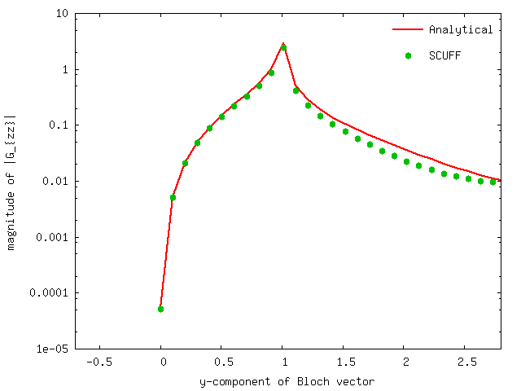

Photonic LDOS above a dielectric half-space
In this example, we exploit scuff-em's support for 2D periodic geometries by using scuff-ldos to compute the electromagnetic local density of states (LDOS) at evaluation points lying above an infinite planar dielectric interface.
Because this geometry happens to be amenable to an analytical treatment, we will also check the numerical results of scuff-em against the results of analytical calculations of the LDOS.
The files for this example may be found in the
share/scuff-em/examples/HalfSpaceLDOS subdirectory
of your scuff-em installation.
gmsh geometry file for unit-cell geometry
The gmsh geometry file Square_N.geo
describes the portion of the half-space interface
that lies within the unit cell,
i.e. the cell that is infinitely periodically
replicated to yield the full geometry.
I call this file Square_N.geo to remind myself that
it contains a parameter N that describes the meshing
fineness; more specifically, N defines the number of
segments per unit length. (The file also contains
a parameter named L that defines the unit-cell
length in microns; here we will keep this parameter
fixed at =1 micron.)
To produce a discretized surface-mesh
representation of this geometry, we run it through
gmsh, using the gmsh command-line argument
-setnumber to fix a value for the N parameter.
% gmsh -2 -setnumber N 4 Square_N.geo -o Square.msh
% RenameMesh Square.msh
% gmsh -2 -setnumber N 8 Square_N.geo -o Square.msh
% RenameMesh Square.msh
(Here RenameMesh is a simple bash script
that uses scuff-analyze to count the number of interior
edges in a surface mesh and rename the mesh file accordingly.)
These commands produce the files Square_40.msh
and Square_176.msh.
These meshes may be visualized in gmsh:
% gmsh Square_40.msh
% gmsh Square_176.msh
Note the following:
-
For 2D periodic geometries in scuff-em, the lattice vectors must lie in the plane.
-
For surfaces that straddle the unit-cell boundaries (as is the case here), each triangle edge that lies on any edge of the unit cell must have an identical image edge on the opposite side of the unit cell. An easy way to achieve this is to use extrusions in gmsh, as in the
.geofile above. -
In this case the unit cell dimensions are where . (More generally, and may be any arbitrary nonzero values, and they need not equal each other.)
scuff-em geometry files
The
scuff-em geometry files
describing an infinite-area PEC ground plane at =0
are
PECPlate_40.scuffgeo
and
PECPlate_176.scuffgeo.
The
scuff-em geometry files
describing an infinite aluminum half-space occupying
the region are
AlHalfSpace_40.scuffgeo
and
AlHalfSpace_176.scuffgeo.
Here's the content of the file AlHalfSpace_176.scuffgeo:
# this comes from Phys Rev B **68** 245405
MATERIAL ALUMINUM
wp = 1.747e16;
gamma = 7.596e13;
Eps(w) = 1 - wp^2 / (w * (w + i*gamma));
ENDMATERIAL
LATTICE
VECTOR 1.0 0.0
VECTOR 0.0 1.0
ENDLATTICE
REGION Exterior MATERIAL Aluminum
REGION UpperHalfSpace MATERIAL Vacuum
SURFACE Plate
MESHFILE Square_176.msh
REGIONS Exterior Aluminum
ENDSURFACE
List of evaluation points
We'll compute the LDOS at two points, located
a distance of 0.1 m and 1 m above the
origin on the axis. The EPFile looks like
this:
0.0 0.0 0.1
0.0 0.0 1.0
List of points
We'll run calculations at a single frequency
( rad/sec) and at Bloch
vectors of the form for
values of running from to
(where =1 m is the lattice constant
in this case).
Thus we create a text file called OKBFile that
looks like this:
1.0 0.0 0.00
1.0 0.0 0.10
...
1.0 0.0 3.14
Launching the run
We will do two scuff-ldos runs, one in which
the LDOS is computed using a semi-analytical approach
(plane-wave decomposition) and another in which
the LDOS is computed using the scuff-em core
library. Note that the command-line arguments
for the two runs are identical except that one of them
has the extra option --HalfSpace Aluminum.
#!/bin/bash
ARGS=""
ARGS="${ARGS} --geometry AlHalfSpace_40.scuffgeo"
ARGS="${ARGS} --EPFile EPFile"
ARGS="${ARGS} --OmegakBlochFile OKBFile"
ARGS="${ARGS} --HalfSpace Aluminum"
scuff-ldos ${ARGS}
Both of these runs produce an output file
named AlHalfSpace_40.byOmegakBloch. (If you
don't rename the file after the first run,
the data from the second run will simply be
appended to the file below the first set of data).
Here's a plot of (the component of the electric dyadic Green's function) versus the -component of the Bloch vector as computed using the analytical and scuff-em approaches.
